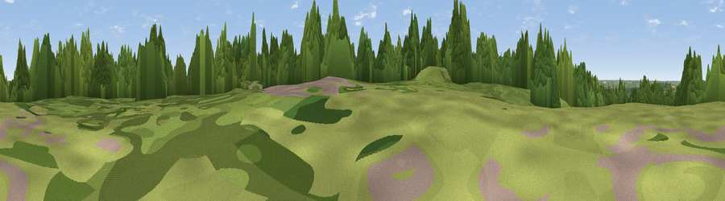

Wellington Hill
#39596 in England · top 37% of its area beats it · near LoughtonThe view, rendered

A 360° render of this exact spot computed from the terrain model, tree cover and land cover — summer colours, afternoon light, calibrated against photographs of famous viewpoints. Real trees, hedges and buildings will differ in detail.
The panorama
Grey silhouette: terrain skyline in each direction (720 bearings, Earth curvature and refraction included). Dashed green: skyline with trees (+15 m) and buildings (+8 m) as obstacles. Blue strip: how far the ground is visible on each bearing.
Where the view opens
Wedge length = distance to the farthest visible ground on that bearing (vegetation-aware). Rings at 10, 25 and 50 km.
What fills the view
61% woodland · 18% grassland · 12% built-up · 9% cropland
Angular shares of the visible panorama (visual magnitude), not map area. Landscape diversity 0.47 (0–1 Shannon).
Key numbers
More beautiful places nearby
The staircase of upgrades: each row has a higher view potential than everything closer. Driving times are estimates from straight-line distance, calibrated against real road routing — check an actual route before setting out.
| Place | Direction | Drive | Score |
|---|---|---|---|
| Viewpoint near Sewardstonebury | WSW · 1 km | ~4 min | 49.8 |
| Viewpoint near Sewardstonebury | SW · 4 km | ~10 min | 50.3 |
| Viewpoint near Wood Green | SW · 14 km | ~25 min | 51.8 |
| Viewpoint near Erith | SSE · 22 km | ~36 min | 54.3 |
| Harrow on the Hill | WSW · 28 km | ~44 min | 60.7 |
| Viewpoint near South Benfleet | ESE · 39 km | ~58 min | 62.9 |
| Viewpoint near Wrotham | SSE · 42 km | ~62 min | 65.1 |
| Viewpoint near Hexton | NW · 43 km | ~62 min | 65.4 |
51.66504, 0.03964 · source: osm peak · position refined by local search. Computed location — check access rights before visiting.